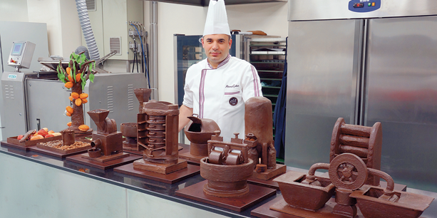

Everyone from seven to seventy loves chocolate. But do you ever wonder about the story behind it? A cacao seed passes through different stages before becoming chocolate.
Transport Information Service